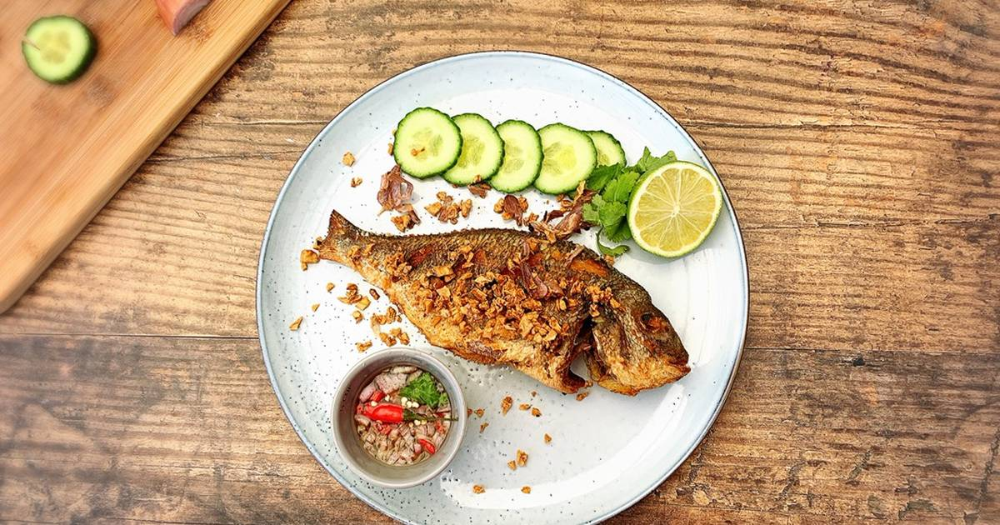

All recipes
Fish

This is a delicious dish, it combines fresh vegetables with the fresh taste of the sea. Fried fish.
In this case we can see perfectly cooked fish with and a little lemon.
Ingredients:
- Mojarra fish
- Cucumber
- Lemon
- Vegetable Oil
- Salt
- Pepper
- Lemon
Steps:
- Wash all ingredients.
- Heating oil in a pan.
- Re-roll the cucumber and slice the lemons.
- Place the fish in the hot oil and fry it with salt.
- Serve the fish accompanied by cucumber with a touch of lemon.